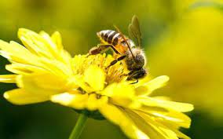
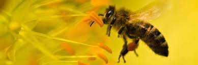
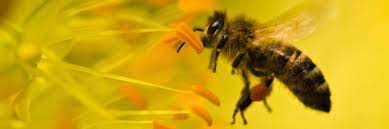

|  |
Bee predators and parasites
Predators of bees come in various forms. One of the most well-known predators is the bee-eater bird, which feeds on bees as an important part of its diet. Other predators, such as spiders and ants, target bees that are on the ground or have ventured away from the safety of their hives. These predators pose a constant threat to foraging bees, adding to the challenges they face in their daily lives. The most notorious parasite is the Varroa mite, a tiny arachnid that infests bee colonies worldwide. These mites feed on the blood of adult bees and their brood, weakening the bees' immune system and leaving them vulnerable to other diseases. The impact of Varroa mites on bee populations has been devastating and has contributed to the decline of bee colonies worldwide. Another significant parasite is the Nosema fungus, which affects the digestive system of bees. This microscopic organism can cause dysentery, leading to the death of infected bees. Similarly, the small hive beetle poses a threat to bees by infiltrating hives, laying eggs, and consuming honey, pollen, and brood. This invasion weakens the hive, making it susceptible to further damage and collapse. |
|
 
